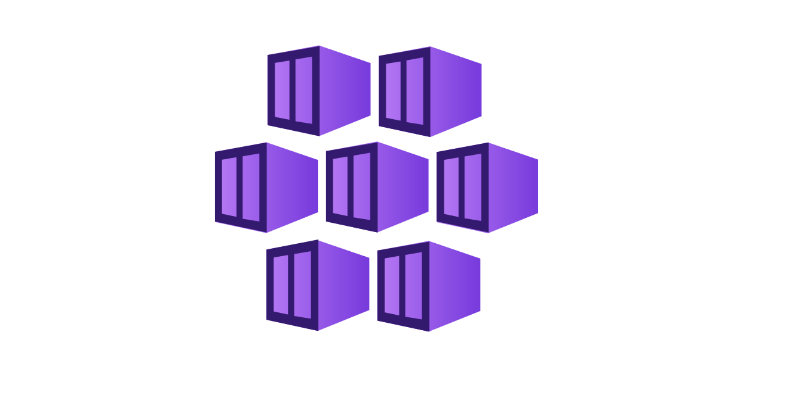
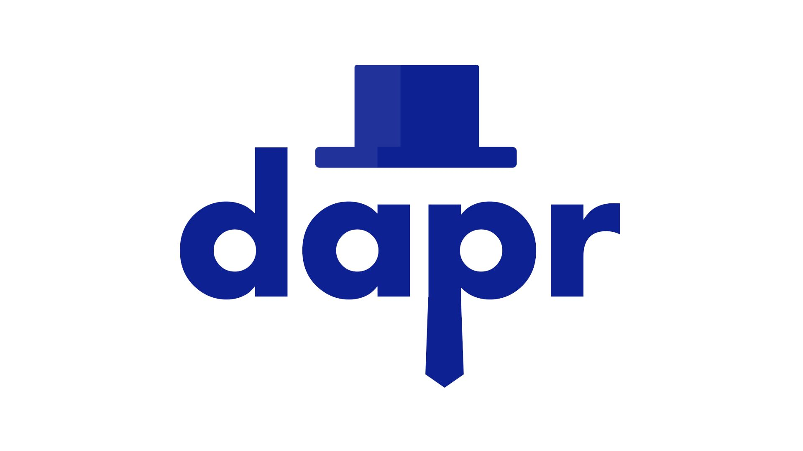

Containers
A container is a loosely isolated environment that allows us to build and run software packages. These software packages include the code and all dependencies to run applications quickly and reliably on any computing environment. We call these packages container images.
The container image becomes the unit we use to distribute our applications.
[AKS] Azure Kubernetes Service
The decoupled design of microservices combined with the atomicity of containers make it possible to scale out apps, and respond to increased demand by deploying more container instances, and to scale back if demand is decreasing. In complex solutions, like the drone tracking app, the process of deploying, updating, monitoring, and removing containers introduces challenges.
Before looking at what Kubernetes is, here’s a summary of a few concepts that are key to containerized workloads.
What is container management?
Container management is the process of organizing, adding, removing, or updating a significant number of containers.
Container management helps you with these otherwise manual tasks.
What is container orchestration?
A container orchestrator is a system that automatically deploys and manages containerized apps. For example, the orchestrator can dynamically respond to changes in the environment to increase or decrease the deployed instances of the managed app. Or, it can ensure all deployed container instances get updated if a new version of a service is released.
What is Kubernetes
Kubernetes is a portable, extensible open-source platform for managing and orchestrating containerized workloads. Kubernetes abstracts away complex container management tasks, and provides you with declarative configuration to orchestrate containers in different computing environments. This orchestration platform gives you the same ease of use and flexibility you may already know from platform as a service (PaaS) or infrastructure as a service (IaaS) offerings.
Find the lab
- Link
[ACA] Azure Container Apps

Azure Container Apps is a new serverless container platform for applications that need to scale on demand in response to HTTPS requests, events, or simply run as always-on services or background job processing without managing VMs, orchestrators, or other cloud infrastructure. Azure Container Apps makes it easy to manage your containerized applications with built-in autoscaling, traffic routing, application lifecycle management, and service-to-service communication in a fully managed environment.
While App Service, Functions, and Logic Apps provide application developers with fully-managed, high-productivity solutions for domain-specific problems, customers have to drop out of the fully-managed world and fall back to Kubernetes for full microservice applications or to run general purpose container applications. Azure container Apps fills this gap and rounds out the Azure application platform by providing high-level APIs for the most common container application scenarios, including auto-scaling, version management, application upgrades, and service-to-service communication in a fully managed environment.
Find the lab
- Link
[DAPR] Distributed Application Runtime
Dapr (Distributed Application Runtime) is a program that facilitates communication between the services of an application. Using the sidecar model, this program is designed to run “next to” a service to provide it with additional functionalities. The two processes are then independent and communicate through their localhost interfaces.The purpose of Dapr is to allow application decoupling, i.e. to reduce the number of strong dependencies between the services of an application.
Find the lab
- Link